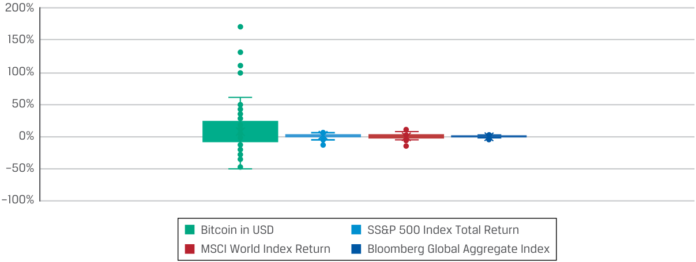

Learning Module 7 Introduction to Digital Assets - Part 3: Digital Asset Investment Risk, Return, and Diversification
Volume 8: Alternative Investments
Learning Module 7 Introduction to Digital Assets
Part 3/3: Digital Asset Investment Risk, Return, and Diversification (PDF Pages 213–220)
Tập 8: Đầu tư Thay thế (Alternative Investments)
Học phần 7: Giới thiệu về Tài sản Số (Introduction to Digital Assets)
Phần 3/3: Rủi ro, Lợi nhuận và Đa dạng hóa trong Đầu tư Tài sản Số (Trang PDF 213–220)
- Which of the following is not a risk in direct investment in digital assets?
-
A. Market manipulation
-
B. Pump and dump schemes
-
C. Failure to validate asset transfers
-
Solution:
- Điều nào sau đây không phải là một rủi ro khi đầu tư trực tiếp vào tài sản số?
-
A. Thao túng thị trường (Market manipulation)
-
B. Các mô hình bơm và xả (Pump and dump schemes)
-
C. Thất bại trong việc xác thực chuyển giao tài sản (Failure to validate asset transfers)
-
Lời giải:
The correct answer is C. There are several risks with direct investment in cryptocurrencies, including the risk for fraud, such as scam ICOs, pump and dump schemes, market manipulation, theft, and schemes that seek to gain access to credentials needed to access cryptocurrency wallet information. However, transactions in digital assets such as cryptocurrencies and tokens are verified and authenticated by cryptographical algorithms and consensus protocols. Once a transaction is entered between the parties, it becomes validated on the blockchain and creates a permanent record of the transaction. Therefore, the DLT technology makes it very unlikely to fail validating asset transfers.
Đáp án đúng là C. Có một số rủi ro khi đầu tư trực tiếp vào tiền mã hóa, bao gồm rủi ro gian lận như các đợt ICO lừa đảo, các mô hình bơm và xả, thao túng thị trường, trộm cắp, và các âm mưu tìm cách chiếm đoạt thông tin đăng nhập cần thiết để truy cập vào thông tin ví tiền mã hóa. Tuy nhiên, các giao dịch tài sản số như tiền mã hóa và mã thông báo được xác minh và chứng thực bằng các thuật toán mật mã học và các giao thức đồng thuận. Một khi giao dịch được xác lập giữa các bên, nó sẽ được xác thực trên chuỗi khối và tạo ra một bản ghi vĩnh viễn về giao dịch đó. Do đó, công nghệ DLT khiến cho việc thất bại trong khâu xác thực chuyển giao tài sản là cực kỳ khó xảy ra.
- Determine the correct answers to fill in the blanks: DeFi is loosely defined as a marketplace for __ that allows for financial transactions to take place and to be recorded on the __ without a central coordinating mechanism. DeFi seeks to design, combine, and develop various ___ as building blocks for sophisticated financial products and services.
- Solution:
- Hãy xác định các câu trả lời đúng để điền vào chỗ trống: DeFi được định nghĩa một cách khái quát là một thị trường dành cho __ cho phép các giao dịch tài chính diễn ra và được ghi nhận trên __ mà không cần một cơ chế điều phối trung tâm. DeFi tìm cách thiết kế, kết hợp và phát triển các ___ khác nhau đóng vai trò như những viên gạch nền tảng (building blocks) cho các sản phẩm và dịch vụ tài chính tinh vi.
- Lời giải:
DeFi is loosely defined as a marketplace for dApps (or decentralized applications) that allow for financial transactions to take place and to be recorded on the blockchain without a central coordinating mechanism. DeFi seeks to design, combine, and develop various open-source financial applications as building blocks for sophisticated financial products and services.
DeFi được định nghĩa một cách khái quát là một thị trường dành cho các dApp (hoặc các ứng dụng phi tập trung – decentralized applications) cho phép các giao dịch tài chính diễn ra và được ghi nhận trên chuỗi khối (blockchain) mà không cần một cơ chế điều phối trung tâm. DeFi tìm cách thiết kế, kết hợp và phát triển các ứng dụng tài chính mã nguồn mở (open-source financial applications) khác nhau đóng vai trò như những viên gạch nền tảng cho các sản phẩm và dịch vụ tài chính tinh vi.
DIGITAL ASSET INVESTMENT RISK, RETURN, AND DIVERSIFICATION
RỦI RO, LỢI NHUẬN VÀ ĐA DẠNG HÓA TRONG ĐẦU TƯ TÀI SẢN SỐ (DIGITAL ASSET INVESTMENT RISK, RETURN, AND DIVERSIFICATION)
5
5
analyze sources of risk, return, and diversification among digital asset investments
Mục tiêu học tập: Phân tích các nguồn rủi ro, lợi nhuận và đa dạng hóa (diversification) giữa các khoản đầu tư tài sản số.
Value appreciation of digital assets, such as Bitcoin and Ethereum, has been rapid since inception, most recently fueled by the introduction of more traditional indirect forms of investment. Because cryptocurrencies are a relatively new innovation, their market is subject to rapid price swings, changes, and uncertainty, with most investors considering them alternative investments.
Sự gia tăng giá trị (value appreciation) của các tài sản số, chẳng hạn như Bitcoin và Ethereum, đã diễn ra rất nhanh chóng kể từ khi ra đời, và gần đây nhất được tiếp thêm động lực bởi sự ra mắt của các hình thức đầu tư gián tiếp mang tính truyền thống hơn. Bởi vì tiền mã hóa là một sự đổi mới tương đối gần đây, thị trường của chúng phải chịu những biến động giá nhanh chóng, nhiều thay đổi và sự bất định, khiến hầu hết các nhà đầu tư xem chúng là các khoản đầu tư thay thế (alternative investments).
Digital Asset Investment Risks and Returns
Rủi ro và Lợi nhuận Đầu tư Tài sản Số (Digital Asset Investment Risks and Returns)
Bitcoin and other cryptocurrency values are based solely on asset appreciation, with no underlying cash flows. The market demand for the limited supply of cryptocurrencies is a significant driver of prices. For instance, the supply of Bitcoin is limited to 21 million Bitcoins, by design. For this reason, Bitcoins are sometimes viewed by some investors as the digital version of gold.
Giá trị của Bitcoin và các đồng tiền mã hóa khác hoàn toàn dựa trên sự tăng giá tài sản (asset appreciation), mà không có bất kỳ dòng tiền cơ sở (underlying cash flows) nào. Nhu cầu thị trường đối với nguồn cung hữu hạn của tiền mã hóa là một động lực dẫn dắt giá đáng kể. Chẳng hạn, nguồn cung của Bitcoin được giới hạn ở mức 21 triệu đồng Bitcoin ngay từ khâu thiết kế. Vì lý do này, Bitcoin đôi khi được một số nhà đầu tư nhìn nhận như là phiên bản kỹ thuật số của vàng (digital version of gold).
Since its launch in 2009, Bitcoin’s performance has been characterized by high return, high volatility, and low correlations with traditional asset classes, as seen in Exhibit 9 and Exhibit 10.
Kể từ khi ra mắt vào năm 2009, hiệu quả hoạt động của Bitcoin được đặc trưng bởi lợi nhuận cao (high return), độ biến động cao (high volatility), và mức tương quan thấp (low correlations) với các loại tài sản truyền thống, như được thấy trong Bảng 9 (Exhibit 9) và Bảng 10 (Exhibit 10).
Exhibit 9: Monthly Log-Returns for Bitcoin and Asset Class Benchmarks between January 2011 and January 2022
Bảng 9: Lợi nhuận Logarit Hàng tháng của Bitcoin và các Chỉ số Chuẩn Loại Tài sản từ Tháng 1 năm 2011 đến Tháng 1 năm 2022 (Exhibit 9: Monthly Log-Returns for Bitcoin and Asset Class Benchmarks between January 2011 and January 2022)
| Bitcoin in USD | S&P 500 Index Total Return |
MSCI World Index Return |
Bloomberg Global Aggre- gate Index |
|
|---|---|---|---|---|
| Average | 8.84% | 1.13% | 0.66% | 0.16% |
| Standard deviation | 0.32 | 0.04 | 0.04 | 0.01 |
| Coefficient of | ||||
| fi variation |
3.66 | 3.43 | 6.09 | 8.16 |
| Bitcoin tính bằng USD (Bitcoin in USD) | Tổng Lợi nhuận Chỉ số S&P 500 (S&P 500 Index Total Return) | Lợi nhuận Chỉ số MSCI World (MSCI World Index Return) | Chỉ số Bloomberg Global Aggregate (Bloomberg Global Aggregate Index) | |
|---|---|---|---|---|
| Trung bình (Average) | 8,84% | 1,13% | 0,66% | 0,16% |
| Độ lệch chuẩn (Standard deviation) | 0,32 | 0,04 | 0,04 | 0,01 |
| Hệ số biến thiên (Coefficient of variation) | 3,66 | 3,43 | 6,09 | 8,16 |
Notes: Bitcoin price in US dollars, S&P 500 Total Return, MSCI World Index, and Bloomberg Global Aggregate Bond Index are log-returns for January 2011 to December 2022. All series are in US dollars.
Ghi chú: Giá Bitcoin tính bằng đô la Mỹ, Tổng lợi nhuận S&P 500 (S&P 500 Total Return), Chỉ số MSCI World, và Chỉ số Trái phiếu Tổng hợp Toàn cầu Bloomberg (Bloomberg Global Aggregate Bond Index) là lợi nhuận logarit (log-returns) trong giai đoạn từ tháng 1 năm 2011 đến tháng 12 năm 2022 (hoặc tháng 1 năm 2022 theo tiêu đề bảng). Tất cả các chuỗi dữ liệu đều tính bằng đô la Mỹ.
From mid-2010, when publicly available market prices were available, Bitcoin price has risen from USD0.05 at inception to the historical peak of USD68,789 on 10 November 2021, before a subsequent crash took it down to around USD17,709 on 18 June 2022. Early investors in Bitcoins were hugely rewarded with phenomenal price appreciation.
Từ giữa năm 2010, khi bắt đầu có mức giá thị trường được công bố công khai, giá Bitcoin đã tăng từ mức 0,05 USD lúc khởi đầu lên mức đỉnh lịch sử là 68.789 USD vào ngày 10 tháng 11 năm 2021, trước khi một đợt sụp đổ tiếp theo kéo nó xuống mức khoảng 17.709 USD vào ngày 18 tháng 6 năm 2022. Các nhà đầu tư giai đoạn đầu vào Bitcoin đã được tưởng thưởng hậu hĩnh với mức tăng giá phi thường (phenomenal price appreciation).
Investing in cryptocurrencies therefore comes with material risks unique to digital assets. Cryptocurrencies have a relatively brief track record, yet their volatility has remained high, as Exhibit 10 shows. Although the volatility of Bitcoin has declined, it is still much higher than the volatility of traditional financial assets, such as the S&P 500 Index.
Do đó, việc đầu tư vào tiền mã hóa đi kèm với những rủi ro trọng yếu (material risks) mang tính đặc thù riêng của tài sản số. Tiền mã hóa có lịch sử hoạt động (track record) tương đối ngắn ngủi, nhưng độ biến động của chúng vẫn duy trì ở mức cao, như Bảng 10 (Exhibit 10) cho thấy. Mặc dù độ biến động của Bitcoin đã giảm bớt theo thời gian, nhưng nó vẫn cao hơn rất nhiều so với độ biến động của các tài sản tài chính truyền thống như Chỉ số S&P 500.
Exhibit 10: Distribution of Monthly Log-Returns for Bitcoin and Asset Class Benchmarks between January 2011 and January 2022
Bảng 10: Phân phối Lợi nhuận Logarit Hàng tháng của Bitcoin và các Chỉ số Chuẩn Loại Tài sản từ Tháng 1 năm 2011 đến Tháng 1 năm 2022 (Exhibit 10: Distribution of Monthly Log-Returns for Bitcoin and Asset Class Benchmarks between January 2011 and January 2022)

Chú thích hình ảnh: Biểu đồ phân phối lợi nhuận logarit hàng tháng (dao động từ $-100\%$ đến $+200\%$) của Bitcoin tính bằng USD (có biên độ dao động cực lớn) so với 3 chỉ số chuẩn truyền thống: Tổng lợi nhuận Chỉ số S&P 500, Lợi nhuận Chỉ số MSCI World, và Chỉ số Bloomberg Global Aggregate (vốn chỉ dao động trong biên độ rất hẹp quanh mức $0\%$).
Notes: Bitcoin price in US dollars, S&P 500 Total Return, MSCI World Index, and Bloomberg Global Aggregate Bond Index are log-returns for January 2011 to January 2022. All series are in US dollars.
Ghi chú: Giá Bitcoin tính bằng đô la Mỹ, Tổng lợi nhuận S&P 500, Chỉ số MSCI World, và Chỉ số Trái phiếu Tổng hợp Toàn cầu Bloomberg là lợi nhuận logarit trong giai đoạn từ tháng 1 năm 2011 đến tháng 1 năm 2022. Tất cả các chuỗi dữ liệu đều tính bằng đô la Mỹ.
Bitcoin-like price and return patterns are often observed in other cryptocurrencies and may reflect a great deal of uncertainty about cryptocurrencies as an investable asset class. Given that regulation of cryptocurrencies is evolving, there still is no clear legal protection for using them as a medium of exchange. While they are regulated as a digital commodity in the United States and comprehensive rules in the EU remain pending, there is a great deal of uncertainty from an investor perspective about the quality of legal protection an investor can enjoy when investing in these assets. Considering that fraud and criminal activities are rampant among buyers, sellers, issuers, and marketers of digital assets, the continued legal and regulatory uncertainty is non-trivial. Multiple countries have placed extensive restrictions on trading and owning cryptocurrencies, such as China, which banned the asset in 2021.
Các khuôn mẫu giá và lợi nhuận giống như của Bitcoin thường được quan sát thấy ở các đồng tiền mã hóa khác và có thể phản ánh mức độ bất định rất lớn về tiền mã hóa với tư cách là một loại tài sản có thể đầu tư (investable asset class). Xét đến việc quy định quản lý đối với tiền mã hóa vẫn đang trong quá trình định hình, hiện vẫn chưa có sự bảo vệ pháp lý rõ ràng cho việc sử dụng chúng làm phương tiện trao đổi. Mặc dù chúng được quản lý như một mặt hàng kỹ thuật số (digital commodity) tại Hoa Kỳ và các quy tắc toàn diện tại Liên minh Châu Âu (EU) vẫn đang chờ ban hành, nhưng vẫn có sự bất định rất lớn xét từ góc độ nhà đầu tư về chất lượng bảo vệ pháp lý mà một nhà đầu tư có thể được hưởng khi đầu tư vào các tài sản này. Xét thấy các hoạt động gian lận và tội phạm diễn ra tràn lan giữa những người mua, người bán, tổ chức phát hành và người tiếp thị tài sản số, thì sự bất định kéo dài về mặt pháp lý và quy định quản lý là một rủi ro không hề nhỏ (non-trivial). Nhiều quốc gia đã áp đặt các hạn chế sâu rộng đối với việc giao dịch và sở hữu tiền mã hóa, chẳng hạn như Trung Quốc—quốc gia đã cấm hoàn toàn loại tài sản này vào năm 2021.
Diversification Benefits of Digital Asset Investments
Lợi ích Đa dạng hóa của các Khoản Đầu tư Tài sản Số (Diversification Benefits of Digital Asset Investments)
Although purely speculative in nature, considered by some to have value drivers distinct from common equity and debt markets, cryptocurrencies have exhibited low correlations with traditional asset class returns. This may provide a hint that the long-term determinants of cryptocurrency prices differ from those of traditional investment assets. In practice, prices (or returns) of cryptocurrencies are driven more by market adoption, network effects, technological advancement, regulatory development, speculation, and general market risk appetite. Some of these factors are unique to this asset class. Exhibit 11 shows the monthly correlation of Bitcoin with some benchmarks.
Mặc dù mang bản chất thuần túy là đầu cơ (purely speculative in nature), được một số người coi là có các động lực tạo giá trị khác biệt so với các thị trường vốn cổ phần và thị trường nợ thông thường, các đồng tiền mã hóa đã thể hiện mức tương quan thấp với lợi nhuận của các loại tài sản truyền thống. Điều này có thể mang lại một gợi ý rằng các yếu tố quyết định giá tiền mã hóa trong dài hạn (long-term determinants) khác với các yếu tố quyết định giá của các tài sản đầu tư truyền thống. Trên thực tế, giá (hoặc lợi nhuận) của tiền mã hóa được dẫn dắt nhiều hơn bởi mức độ chấp nhận của thị trường (market adoption), hiệu ứng mạng lưới (network effects), sự tiến bộ công nghệ (technological advancement), sự phát triển của quy định quản lý (regulatory development), hoạt động đầu cơ (speculation), và khẩu vị rủi ro chung của thị trường (general market risk appetite). Một số nhân tố trong số này mang tính đặc thù duy nhất đối với loại tài sản này. Bảng 11 (Exhibit 11) trình bày hệ số tương quan hàng tháng của Bitcoin với một số chỉ số chuẩn.
Exhibit 11: Correlations between Monthly Log-Returns for Cryptocurrencies and Selected Asset Classes (January 2011 to January 2022)
Bảng 11: Hệ số Tương quan giữa Lợi nhuận Logarit Hàng tháng của Tiền mã hóa và một số Loại Tài sản Được Lựa chọn (Tháng 1 năm 2011 đến Tháng 1 năm 2022) (Exhibit 11: Correlations between Monthly Log-Returns for Cryptocurrencies and Selected Asset Classes (January 2011 to January 2022))
| Bitcoin in US Dollars |
S&P 500 Index Total Return |
MSCI World Index Return |
Bloomberg Global Aggregate Index |
|
|---|---|---|---|---|
| Bitcoin in US | ||||
| dollars | 1 | |||
| S&P 500 Index | ||||
| Total Return | 0.21 | 1 | ||
| MSCI World Index | ||||
| Return | 0.22 | 0.97 | 1 | |
| Bloomberg Global | ||||
| Aggregate Index | 0.14 | 0.25 | 0.33 | 1 |
| Bitcoin tính bằng Đô la Mỹ (Bitcoin in US Dollars) | Tổng Lợi nhuận Chỉ số S&P 500 (S&P 500 Index Total Return) | Lợi nhuận Chỉ số MSCI World (MSCI World Index Return) | Chỉ số Bloomberg Global Aggregate (Bloomberg Global Aggregate Index) | |
|---|---|---|---|---|
| Bitcoin tính bằng đô la Mỹ (Bitcoin in US dollars) | 1 | |||
| Tổng lợi nhuận Chỉ số S&P 500 (S&P 500 Index Total Return) | 0,21 | 1 | ||
| Lợi nhuận Chỉ số MSCI World (MSCI World Index Return) | 0,22 | 0,97 | 1 | |
| Chỉ số Bloomberg Global Aggregate (Bloomberg Global Aggregate Index) | 0,14 | 0,25 | 0,33 | 1 |
Notes: Bitcoin price in US dollars, S&P 500 Total Return, MSCI World Index, and Bloomberg Global Aggregate Bond Index are log-returns for January 2011 to January 2022. All series are in US dollars.
Ghi chú: Giá Bitcoin tính bằng đô la Mỹ, Tổng lợi nhuận S&P 500, Chỉ số MSCI World, và Chỉ số Trái phiếu Tổng hợp Toàn cầu Bloomberg là lợi nhuận logarit trong giai đoạn từ tháng 1 năm 2011 đến tháng 1 năm 2022. Tất cả các chuỗi dữ liệu đều tính bằng đô la Mỹ.
In this way, cryptocurrencies are potential portfolio diversifiers. The correlation of cryptocurrencies with traditional assets appears to increase, and the correlation and diversification benefits of cryptocurrencies remain to be seen.
Theo cách này, tiền mã hóa là những công cụ đa dạng hóa danh mục tiềm năng (potential portfolio diversifiers). Tuy nhiên, độ tương quan của tiền mã hóa với các tài sản truyền thống dường như đang tăng lên, và mức độ tương quan cũng như lợi ích đa dạng hóa thực sự của tiền mã hóa trong tương lai vẫn còn phải chờ xem xét thêm.
QUESTION SET
BỘ CÂU HỎI (QUESTION SET)
- More institutional investors are allocating capital to cryptocurrencies because of their:
-
A. low price volatility.
-
B. high expected cash flow.
-
C. low correlation with other traditional asset classes.
- Ngày càng có nhiều nhà đầu tư tổ chức phân bổ vốn vào tiền mã hóa bởi vì:
-
A. độ biến động giá thấp của chúng.
-
B. dòng tiền kỳ vọng cao của chúng.
-
C. mức tương quan thấp của chúng với các loại tài sản truyền thống khác.
Solution:
Lời giải:
The correct answer is C. The value of Bitcoin and other cryptocurrencies is based solely on asset appreciation, with no underlying cash flows. Historically, their price volatility has been extremely high. As such, cryptocurrencies are often considered a high-risk investment. Nevertheless, more institutional investors allocate their investment into cryptocurrencies because of the low historical correlation with other traditional asset classes, providing potential diversification benefits to a portfolio.
Đáp án đúng là C. Giá trị của Bitcoin và các đồng tiền mã hóa khác hoàn toàn dựa trên sự tăng giá tài sản, mà không có bất kỳ dòng tiền cơ sở nào. Trong lịch sử, độ biến động giá của chúng ở mức cực kỳ cao. Do đó, tiền mã hóa thường được coi là một khoản đầu tư có rủi ro cao. Mặc dù vậy, ngày càng có nhiều nhà đầu tư tổ chức phân bổ khoản đầu tư của họ vào tiền mã hóa bởi vì mức tương quan lịch sử thấp với các loại tài sản truyền thống khác, mang lại lợi ích đa dạng hóa tiềm năng cho một danh mục đầu tư.
- Explain the historical characteristics of cryptocurrencies’ correlation with other traditional investments.
- Hãy giải thích các đặc điểm lịch sử về độ tương quan của tiền mã hóa với các khoản đầu tư truyền thống khác.
Solution:
Lời giải:
Cryptocurrencies have historically exhibited low long-term correlations with traditional asset class returns. Prices of cryptocurrencies are driven more by market adoption, network effects, technological advancement, regulatory development, and general market risk appetite. Some of these factors are unique to this asset class. But as institutional participation increases in digital assets, the correlations with traditional assets have risen.
Tiền mã hóa trong lịch sử đã thể hiện mức tương quan dài hạn thấp với lợi nhuận của các loại tài sản truyền thống. Giá của tiền mã hóa được dẫn dắt nhiều hơn bởi mức độ chấp nhận của thị trường, hiệu ứng mạng lưới, sự tiến bộ công nghệ, sự phát triển của quy định quản lý, và khẩu vị rủi ro chung của thị trường. Một số nhân tố trong số này mang tính đặc thù duy nhất đối với loại tài sản này. Nhưng khi sự tham gia của các định chế tài chính vào tài sản số gia tăng, hệ số tương quan với các tài sản truyền thống đã tăng lên.
- Identify the following statement as true or false: Regulatory uncertainty is a non-trivial risk for investors in cryptocurrencies.
- Hãy xác định phát biểu sau đây là đúng hay sai: Sự bất định về quy định quản lý (regulatory uncertainty) là một rủi ro không hề nhỏ (non-trivial risk) đối với các nhà đầu tư vào tiền mã hóa.
Solution:
Lời giải:
True. Regulatory uncertainty is a non-trivial risk for investors in cryptocurrencies because there is considerable risk of fraud and criminal activity among participants, and legal protection over these assets remains uncertain. Regulation of cryptocurrencies is evolving; some countries have adopted them, while some have banned them altogether.
Đúng (True). Sự bất định về quy định quản lý là một rủi ro không hề nhỏ đối với các nhà đầu tư vào tiền mã hóa bởi vì có rủi ro đáng kể về hành vi gian lận và tội phạm giữa các bên tham gia, đồng thời sự bảo vệ pháp lý đối với các tài sản này vẫn còn chưa chắc chắn. Quy định quản lý đối với tiền mã hóa đang trong quá trình định hình; một số quốc gia đã chấp nhận chúng, trong khi một số quốc gia khác lại cấm hoàn toàn.
~~PRACTICE PROBLEMS~~
BÀI TẬP THỰC HÀNH (PRACTICE PROBLEMS)
1. A benefit of distributed ledger technology (DLT) that increases its use by the investment industry is its:
1. Một lợi ích của công nghệ sổ cái phân tán (distributed ledger technology – DLT) giúp làm tăng việc ứng dụng nó trong ngành công nghiệp đầu tư là:
-
A. scalability of underlying systems.
-
B. ease of integration with existing systems.
-
C. streamlining of current post-trade processes.
-
A. khả năng mở rộng quy mô (scalability) của các hệ thống cơ sở.
-
B. sự dễ dàng tích hợp với các hệ thống hiện hữu.
-
C. việc tinh gọn hóa các quy trình hậu giao dịch (post-trade processes) hiện tại.
2. What is a DLT application suited for physical assets?
2. Đâu là một ứng dụng của DLT phù hợp cho các tài sản vật chất (physical assets)?
-
A. Tokenization
-
B. Cryptocurrencies
-
C. Permissioned networks
-
A. Mã hóa tài sản (Tokenization)
-
B. Tiền mã hóa (Cryptocurrencies)
-
C. Các mạng lưới có cấp phép (Permissioned networks)
3. A cryptocurrency miner can earn new digital assets by:
3. Một thợ đào tiền mã hóa (cryptocurrency miner) có thể kiếm được các tài sản số mới bằng cách:
-
A. solving complex algorithm puzzles to validate blocks of transactions onto a blockchain network based on a PoS protocol.
-
B. staking his own cryptocurrencies to validate blocks of transactions onto a blockchain network based on a PoW protocol.
-
C. validating and locking transactions onto a blockchain irrespective of the consensus protocol adopted by the particular network.
-
A. giải các câu đố thuật toán phức tạp để xác thực các khối giao dịch lên một mạng lưới chuỗi khối dựa trên giao thức PoS.
-
B. đặt cọc (staking) tiền mã hóa của chính mình để xác thực các khối giao dịch lên một mạng lưới chuỗi khối dựa trên giao thức PoW.
-
C. xác thực và khóa các giao dịch lên một chuỗi khối bất kể giao thức đồng thuận (consensus protocol) nào được mạng lưới cụ thể đó áp dụng.
4. The perceived value of a cryptocurrency depends on the following factors except :
4. Giá trị cảm nhận (perceived value) của một đồng tiền mã hóa phụ thuộc vào các nhân tố sau đây, ngoại trừ:
-
A. the maximum supply of the cryptocurrencies.
-
B. the underlying cash flow of the cryptocurrencies.
-
C. whether the relevant blockchain operates on a permissionless or permissioned network.
-
A. nguồn cung tối đa (maximum supply) của đồng tiền mã hóa đó.
-
B. dòng tiền cơ sở (underlying cash flow) của đồng tiền mã hóa đó.
-
C. việc chuỗi khối liên quan hoạt động trên một mạng lưới không cần cấp phép hay có cấp phép.
5. A key difference between digital assets and traditional financial assets is that:
5. Một điểm khác biệt cốt lõi giữa tài sản số và tài sản tài chính truyền thống là:
-
A. digital assets are usually subject to a well-defined set of regulations.
-
B. transactions in digital assets are most likely kept on private centralized ledgers.
-
C. digital assets are valued not on their earnings but on the expected price appreciation given supply limitation.
-
A. tài sản số thường chịu sự điều chỉnh của một bộ quy định quản lý được định nghĩa chặt chẽ.
-
B. các giao dịch tài sản số có nhiều khả năng nhất được lưu giữ trên các sổ cái tập trung tư nhân.
-
C. tài sản số được định giá không phải dựa trên thu nhập của chúng mà dựa trên sự tăng giá kỳ vọng (expected price appreciation) xét trong điều kiện giới hạn nguồn cung.
6. Asset-backed tokens have the potential of improving the liquidity of the underlying assets because:
6. Các mã thông báo được đảm bảo bằng tài sản (asset-backed tokens) có tiềm năng cải thiện tính thanh khoản của các tài sản cơ sở bởi vì:
-
A. they allow for fractional ownership of high-value assets.
-
B. costs of validating the transactions are reduced on the blockchains.
-
C. they make it easier to trade the underlying assets on centralized exchanges.
-
A. chúng cho phép sở hữu theo phân đoạn nhỏ (fractional ownership) đối với các tài sản có giá trị cao.
-
B. chi phí xác thực các giao dịch được cắt giảm trên các chuỗi khối.
-
C. chúng giúp việc giao dịch các tài sản cơ sở trên các sàn giao dịch tập trung trở nên dễ dàng hơn.
| 7.Which of the following is the least vulnerable to a computer security hack? A.Cryptocurrency wallets |
|---|
| B.Centralized cryptocurrency exchanges |
| C.Decentralized cryptocurrency exchanges |
| 8.An investor who wants to replicate the return on Bitcoins without the use of a digital wallet can_best_do so by: |
| A.investing in a cryptocurrency coin trust that holds Bitcoins. |
| B.investing in a listed cryptocurrency exchange stock. |
| C.buying Bitcoins from a centralized cryptocurrency exchange. |
| 9.Which of the following is a key building block of dApps? |
| A.Bitcoins |
| B.Smart contracts |
| C.Centralized exchanges |
| 10.Compared to traditional equity investment, the historical return distribution of Bitcoins shows: |
| A.negative skewness. |
| B.high mean returns. |
| C.low standard deviation. |
| 11.Despite higher volatility, cryptocurrencies may offer diversification benefits to an investment portfolio due to their: |
| A.scarcity value. |
| B.expected higher return. |
| C.lower correlation with other traditional investments. |
| 12.Price volatility of cryptocurrencies is high most likely because they are: |
| A.subject to self-imposed limit on supply. |
| B.correlated with traditional risky asset classes. |
| C.highly speculative with no fundamental value or cash flow. |
7. Điều nào sau đây ít bị tổn thương nhất trước một cuộc tấn công xâm nhập bảo mật máy tính (computer security hack)?
-
A. Các ví tiền mã hóa (Cryptocurrency wallets)
-
B. Các sàn giao dịch tiền mã hóa tập trung (Centralized cryptocurrency exchanges)
-
C. Các sàn giao dịch tiền mã hóa phi tập trung (Decentralized cryptocurrency exchanges)
8. Một nhà đầu tư muốn mô phỏng lại tỷ suất sinh lợi của Bitcoin mà không cần sử dụng ví kỹ thuật số có thể thực hiện điều đó tốt nhất bằng cách:
-
A. đầu tư vào một quỹ tín thác đồng tiền mã hóa (cryptocurrency coin trust) nắm giữ Bitcoin.
-
B. đầu tư vào một cổ phiếu sàn giao dịch tiền mã hóa đang niêm yết (listed cryptocurrency exchange stock).
-
C. mua Bitcoin từ một sàn giao dịch tiền mã hóa tập trung.
9. Điều nào sau đây là một viên gạch nền tảng cốt lõi (key building block) của các ứng dụng phi tập trung (dApps)?
-
A. Bitcoin
-
B. Các hợp đồng thông minh (Smart contracts)
-
C. Các sàn giao dịch tập trung (Centralized exchanges)
10. So với khoản đầu tư cổ phiếu truyền thống, phân phối lợi nhuận lịch sử (historical return distribution) của Bitcoin cho thấy:
-
A. độ lệch âm (negative skewness).
-
B. lợi nhuận trung bình cao (high mean returns).
-
C. độ lệch chuẩn thấp (low standard deviation).
11. Mặc dù có độ biến động cao hơn, tiền mã hóa có thể mang lại lợi ích đa dạng hóa cho một danh mục đầu tư nhờ vào:
-
A. giá trị khan hiếm (scarcity value) của chúng.
-
B. lợi nhuận kỳ vọng cao hơn của chúng.
-
C. mức tương quan thấp hơn (lower correlation) của chúng với các khoản đầu tư truyền thống khác.
12. Độ biến động giá của các đồng tiền mã hóa ở mức cao có khả năng lớn nhất là bởi vì chúng:
-
A. chịu giới hạn tự áp đặt đối với nguồn cung.
-
B. có tương quan với các loại tài sản rủi ro truyền thống.
-
C. mang tính đầu cơ rất cao (highly speculative) mà không có giá trị cơ bản hay dòng tiền nào.
~~SOLUTIONS~~
LỜI GIẢI (SOLUTIONS)
-
The correct answer is C. DLT has the potential to streamline the existing, often complex and labor-intensive post-trade processes in securities markets by providing close to real-time trade verification, reconciliation, and settlement, thereby reducing related complexity, time, and costs.
-
The correct answer is A. Through tokenization—the process of representing ownership rights to physical assets on a blockchain or distributed ledger—DLT has the potential to streamline this rights process by creating a single digital record of ownership with which to verify ownership title and authenticity, including all historical activity.
-
The correct answer is C. Under both PoW and PoS consensus protocols, the validation of the transactions, or “mining,” always comes with rewards. A successful miner that validates the transactions obtains new digital assets—either a cryptocurrency or a token. For blockchain networks based on the PoW protocol, the miner earns his digital assets by solving complex algorithm puzzles to validate blocks of transactions onto a blockchain network. For blockchain networks based on the PoS protocol, the miner earns his digital assets by staking his own to validate and attest to the new blocks of transactions.
-
The correct answer is B. A cryptocurrency derives its price solely from an anticipated asset appreciation given the perceived scarcity value arising from a self-imposed limit of supply. Whether a cryptocurrency transaction is validated in a permissionless or permissioned network using either PoS or PoW standard also impacts its perceived value. But most digital assets do not have an inherent value based on underlying assets or on the potential cash flow.
-
The correct answer is C. Unlike traditional financial assets, most digital assets do not have an inherent value based on underlying assets or the potential cash flow or earnings they are expected to generate. Digital asset transactions are usually kept on decentralized digital ledgers using cryptography and algorithms without any central intermediaries. Regulations around digital assets are also ambiguous and evolving, unlike most traditional financial assets, which are subject to a well-defined set of regulations.
-
The correct answer is A. Asset-backed tokens can increase liquidity by allowing for fractional ownership of high-priced assets, such as houses, art, precious metals, and precious stones, which allows multiple investors to possess a fractional interest of the same asset. B is incorrect because the validation of transactions on the blockchains takes up a substantial amount of computing power, which can be expensive.
-
The correct answer is C. Decentralized exchanges operate on a distributed platform without central coordination or control. The benefit is that should one of the computers on the network be attacked, the exchange remains operational since there are numerous other computers that continue to operate on the network. For this reason, decentralized exchanges are substantially more difficult to hack, rendering such attacks almost certain to fail. However, transactions on centralized cryptocurrency exchanges are hosted on private servers, exposing the centralized exchanges and their clients to security vulnerabilities. Should the exchange’s servers become compromised, the entire system may become paralyzed, halting trade and leaking vital user information, such as cryptographic keys stored in the cryptocurrency wallets.
-
Đáp án đúng là C. Công nghệ DLT có tiềm năng tinh gọn hóa các quy trình hậu giao dịch (post-trade processes) hiện hữu—vốn thường phức tạp và thâm dụng lao động—trên các thị trường chứng khoán bằng cách cung cấp khả năng xác minh, đối chiếu và thanh toán giao dịch gần như theo thời gian thực, qua đó làm giảm sự phức tạp, thời gian và chi phí có liên quan.
-
Đáp án đúng là A. Thông qua quá trình mã hóa tài sản (tokenization)—quy trình biểu diễn các quyền sở hữu đối với tài sản vật chất trên một chuỗi khối hoặc sổ cái phân tán—DLT có tiềm năng tinh gọn hóa quy trình quyền sở hữu này bằng cách tạo ra một bản ghi quyền sở hữu kỹ thuật số duy nhất dùng để xác minh giấy tờ sở hữu và tính xác thực, bao gồm toàn bộ hoạt động lịch sử.
-
Đáp án đúng là C. Dưới cả hai giao thức đồng thuận PoW và PoS, việc xác thực các giao dịch, hay còn gọi là “đào” (“mining”), luôn đi kèm với phần thưởng. Một thợ đào thành công xác thực được các giao dịch sẽ nhận được các tài sản số mới—hoặc là một đồng tiền mã hóa hoặc là một mã thông báo (token). Đối với các mạng lưới chuỗi khối dựa trên giao thức PoW, thợ đào kiếm được tài sản số của mình bằng cách giải các câu đố thuật toán phức tạp để xác thực các khối giao dịch lên mạng lưới chuỗi khối. Đối với các mạng lưới chuỗi khối dựa trên giao thức PoS, thợ đào (người xác thực) kiếm được tài sản số của mình bằng cách đặt cọc (staking) tài sản của chính mình để xác thực và chứng thực các khối giao dịch mới.
-
Đáp án đúng là B. Một đồng tiền mã hóa nhận được mức giá của nó hoàn toàn từ sự tăng giá tài sản được kỳ vọng xét trong điều kiện giá trị khan hiếm được cảm nhận phát sinh từ một giới hạn nguồn cung tự áp đặt. Việc một giao dịch tiền mã hóa được xác thực trong một mạng lưới không cần cấp phép hay có cấp phép bằng tiêu chuẩn PoS hay PoW cũng tác động đến giá trị cảm nhận của nó. Nhưng hầu hết các tài sản số không có giá trị nội tại vốn có dựa trên các tài sản cơ sở hoặc dựa trên dòng tiền tiềm năng.
-
Đáp án đúng là C. Không giống như các tài sản tài chính truyền thống, hầu hết các tài sản số không có giá trị nội tại vốn có dựa trên các tài sản cơ sở hoặc dòng tiền hay thu nhập tiềm năng mà chúng được kỳ vọng sẽ tạo ra. Các giao dịch tài sản số thường được lưu giữ trên các sổ cái kỹ thuật số phi tập trung sử dụng mật mã học và các thuật toán mà không có bất kỳ bên trung gian tập trung nào. Các quy định quản lý xoay quanh tài sản số cũng còn mơ hồ và đang trong quá trình phát triển, không giống như hầu hết các tài sản tài chính truyền thống vốn chịu sự điều chỉnh của một bộ quy định quản lý được định nghĩa chặt chẽ.
-
Đáp án đúng là A. Các mã thông báo được đảm bảo bằng tài sản (asset-backed tokens) có thể làm tăng tính thanh khoản bằng cách cho phép sở hữu theo phân đoạn nhỏ (fractional ownership) đối với các tài sản có giá cao như nhà cửa, tác phẩm nghệ thuật, kim loại quý và đá quý, cho phép nhiều nhà đầu tư cùng sở hữu một phần lợi ích phân đoạn của cùng một tài sản. B không đúng bởi vì việc xác thực các giao dịch trên các chuỗi khối tiêu tốn một lượng năng lực tính toán đáng kể, vốn có thể rất đắt đỏ.
-
Đáp án đúng là C. Các sàn giao dịch phi tập trung (decentralized exchanges) hoạt động trên một nền tảng phân tán mà không có sự điều phối hay kiểm soát trung tâm. Lợi ích là nếu một trong các máy tính trên mạng lưới bị tấn công, sàn giao dịch vẫn tiếp tục hoạt động vì có rất nhiều máy tính khác vẫn tiếp tục vận hành trên mạng lưới. Vì lý do này, các sàn giao dịch phi tập trung khó bị tin tặc tấn công (hack) hơn rất nhiều, khiến cho những cuộc tấn công như vậy gần như chắc chắn thất bại. Ngược lại, các giao dịch trên các sàn giao dịch tiền mã hóa tập trung được lưu trữ trên các máy chủ tư nhân, khiến các sàn giao dịch tập trung và khách hàng của họ phải đối mặt với các lỗ hổng bảo mật. Nếu các máy chủ của sàn giao dịch bị xâm nhập, toàn bộ hệ thống có thể bị tê liệt, làm ngưng trệ giao dịch và làm rò rỉ thông tin sống còn của người dùng, chẳng hạn như các khóa mật mã được lưu trữ trong các ví tiền mã hóa.
-
The correct answer is A. Investing in a cryptocurrency coin trust that holds Bitcoins is the best way to replicate the return on Bitcoins. Investing in a listed cryptocurrency exchange stock provides very indirect exposure that may not necessarily replicate the performance of Bitcoins because of a variety of company-specific factors, as well as the sensitivity to the general stock market environment. Buying Bitcoins from a centralized cryptocurrency exchange provides a direct exposure, but it would require a digital wallet.
-
The correct answer is B. Smart contracts are the building block of dApps. dApps are usually developed on the Ethereum blockchain network or other smart contract platforms that allow for peer-to-peer interaction using interoperable, transparent smart contracts that persist for the duration of the chain. These decentralized applications, or dApps, allow for transactions to take place—and to be recorded on the blockchain—without a central coordinating mechanism or centralized exchange.
-
The correct answer is B. Historical Bitcoin returns are characterized by high mean returns and high standard deviation. Despite the high volatility, the return distribution is positively skewed.
-
The correct answer is C. Although purely speculative in nature, cryptocurrencies have historically exhibited low correlations with traditional asset class returns and are considered to have value drivers distinct from common equity and debt markets. Therefore, cryptocurrencies are potential diversifiers of an investment portfolio.
-
The correct answer is C. Cryptocurrencies are purely speculative, with no fundamental value or future cash flow. There is no consensus on how to value them. Their markets are therefore subject to rapid price swings, changes, and uncertainty. But historically, their performance has relatively low correlations with traditional asset classes.
-
Đáp án đúng là A. Đầu tư vào một quỹ tín thác đồng tiền mã hóa (cryptocurrency coin trust) đang nắm giữ Bitcoin là cách tốt nhất để mô phỏng lại tỷ suất sinh lợi của Bitcoin mà không cần ví kỹ thuật số. Việc đầu tư vào một cổ phiếu sàn giao dịch tiền mã hóa đang niêm yết chỉ mang lại mức tiếp xúc rất gián tiếp, có thể không nhất thiết mô phỏng đúng hiệu quả hoạt động của Bitcoin do có nhiều nhân tố đặc thù của công ty cũng như độ nhạy cảm với môi trường thị trường chứng khoán chung. Việc mua Bitcoin từ một sàn giao dịch tiền mã hóa tập trung mang lại mức tiếp xúc trực tiếp, nhưng nó đòi hỏi phải có một chiếc ví kỹ thuật số.
-
Đáp án đúng là B. Các hợp đồng thông minh (smart contracts) là viên gạch nền tảng của các ứng dụng dApp. Các dApp thường được phát triển trên mạng lưới chuỗi khối Ethereum hoặc các nền tảng hợp đồng thông minh khác cho phép tương tác ngang hàng bằng cách sử dụng các hợp đồng thông minh minh bạch, có khả năng tương tác liên thông và tồn tại xuyên suốt thời gian hoạt động của chuỗi. Các ứng dụng phi tập trung này, hay dApps, cho phép các giao dịch diễn ra—và được ghi nhận trên chuỗi khối—mà không cần một cơ chế điều phối trung tâm hay một sàn giao dịch tập trung.
-
Đáp án đúng là B. Lợi nhuận lịch sử của Bitcoin được đặc trưng bởi lợi nhuận trung bình cao (high mean returns) và độ lệch chuẩn cao (high standard deviation). Bất chấp độ biến động cao, phân phối lợi nhuận của nó có độ lệch dương (positively skewed).
-
Đáp án đúng là C. Mặc dù mang bản chất thuần túy là đầu cơ, các đồng tiền mã hóa trong lịch sử đã thể hiện mức tương quan thấp với lợi nhuận của các loại tài sản truyền thống và được coi là có các động lực tạo giá trị khác biệt so với các thị trường vốn cổ phần và thị trường nợ thông thường. Do đó, tiền mã hóa là những công cụ đa dạng hóa tiềm năng của một danh mục đầu tư.
-
Đáp án đúng là C. Các đồng tiền mã hóa mang tính đầu cơ thuần túy, không có giá trị cơ bản hay dòng tiền trong tương lai. Không có sự đồng thuận nào về cách thức định giá chúng. Do đó, thị trường của chúng phải chịu những biến động giá nhanh chóng, nhiều thay đổi và sự bất định. Nhưng xét trong lịch sử, hiệu quả hoạt động của chúng có mức tương quan tương đối thấp với các loại tài sản truyền thống.